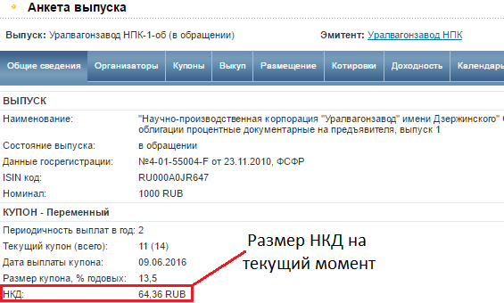
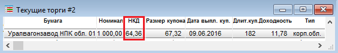

НКД или Накопленный Купонный Доход – это параметр, с помощью которого в облигациях реализован механизм выплаты процентного дохода, т.е. наличие НКД дает возможность покупать и продавать облигации на вторичном рынке до даты погашения без потери купонного дохода.
По-другому, Накопленный Купонный Доход это часть купонного дохода по облигации, которая рассчитывается исходя из количества дней от даты, когда последний раз эмитентом выплачивался купон и до текущего дня. Чтобы понятие НКД стало более ясным, рассмотрим этот параметр с точки зрения покупателя и продавца.
Представьте, что вы хотите купить облигацию. Вы открываете стакан котировок и просматриваете цены, допустим, интересующая вас облигация торгуется по 100% от номинала (цены на облигации всегда выражаются в процентах от номинальной стоимости). Вы решаете купить эту облигацию, но чтобы купить ее, придется заплатить не 100%, т.е. не ту цену, которую вы видите в стакане, а 100%+НКД, почему?
Потому что тот человек, который вам ее продает, делает это в середине купонного периода. Другими словами, предыдущий владелец держал облигацию 2 месяца, в течение которого у него накапливался купонный доход. Выплата купона эмитентом по выбранной вами бумаге осуществляется раз в полгода, т.е. вы как покупатель компенсируете вашему контрагенту доход, который у него накопился за 2 месяца, а когда закончится полный купонный период (т.е. еще через 4 месяца), эмитент выплатит вам купон в полном объеме за 6 месяцев. Таким образом, вы скомпенсируете НКД за 2 месяца, который заплатили при покупке облигации, плюс получите доход за 4 месяца, в течение которого удерживали облигацию.
Представьте, что у вас в портфеле уже 5 месяцев лежит облигация, но вы решаете ее продать. Однако до конца купонного периода (т.е. до того дня, когда эмитент выплатит купон по облигации) остается еще 1 месяц, но деньги вам нужны срочно. Получается, что облигацию вы продаете как бы досрочно, не дожидаясь окончания купонного периода. Каким образом вы получите доход? А доход вы получите за счет покупателя, который купит у вас эту облигацию, потому что ваш контрагент (или покупатель вашей облигации) заплатит вам цену облигации, например, 100% плюс НКД за 5 месяца, в течение которых вы удерживали данную бумагу.
НКД всегда рассчитывается исходя из купона. Например, если инвестор покупает однолетнюю облигацию с купоном 10% за 90% от номинала, то фактически он имеет простую доходность к погашению 20% годовых (потому что по итогам года получит купон 10% плюс 10% доход от курсовой разницы, т.к. покупал по 90%, а погашение состоится по 100%). Но если инвестор продаст облигацию, не дожидаясь момента погашения, то НКД будет рассчитываться исходя из купонной доходности 10%, а не из доходности к погашению 20%.
Справедливо и наоборот, если купон по облигации составляет 20% от номинала, а куплена бумага была за 110%, то простая доходность к погашению будет равна 10% (+20% купон -10% разница в цене), однако при досрочной продаже НКД будет рассчитан исходя из купонной доходности 20%, а не из доходности к погашению 10%.
Таким образом, НКД всегда меньше, чем купон. В тот день, когда НКД сравняется с купоном, произойдет купонная выплата от эмитента, после чего НКД обнулится, и с нового купонного периода будет рассчитываться заново.
Размер НКД можно узнать двумя путями: первое, посмотреть на сайте РусБондс в разделе «Общие сведения» в Анкете выпуска интересующей вас бумаги.

Второе, посмотреть в торговом терминале QUIK, нужная информация будет отражена в столбце «НКД».

Налоговым агентом по доходу в виде купона является эмитент, т.е. купонные платежи поступают на счет инвестора уже очищенные от налога. Если же вы купили облигацию в начале купонного периода и решили не дожидаться, когда купон будет выплачен эмитентом, а продали ее кому-то другому (т.е. по сути НКД вам передал этот новый владелец облигации), в таком случае налог с НКД удерживается брокером.
Доходность банковского депозита напрямую зависит от срока, на который вы «запираете» свои деньги, чем меньше срок, тем ниже доходность. Существуют конечно депозиты, по которым деньги можно изъять досрочно, но процентная ставка при этом будет значительно ниже рыночной.
В облигациях же ситуация иная, вы имеете возможность выбрать приемлемую доходность (рыночную, чтобы риски были минимальны, или даже выше), при этом срок инвестирования никак не будет влиять на величину процентной ставки. Другими словами, вы можете держать деньги в облигациях всего 2 недели, а доходность получить на уровне рыночной. Банковский депозит за две недели даст доходность в лучшем случае в два раза ниже рыночной, а то и еще меньше. Такое преимущество в облигациях возможно именно благодаря наличию НКД, позволяющему продать бумаги досрочно без потери процентного дохода.